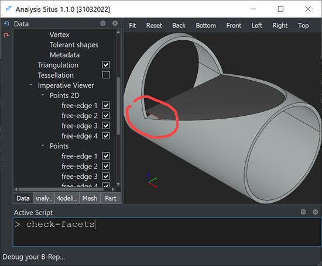

Facets validity
Sometimes a model is fine while its visualization facets are broken. E.g., in a watertight solid model, you would not expect finding any open or dangling links. Use check-facets command to verify your visualization facets, i.e., the triangulation stored in the CAD faces.
